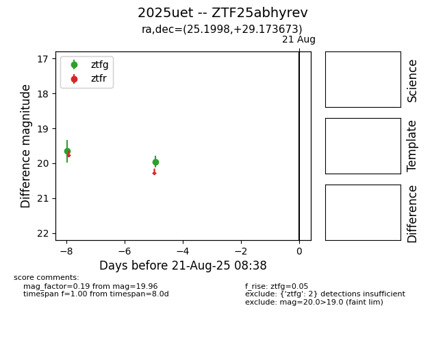

Target 2025uet at 2025-08-21 09:16, see:
FINK: fink-portal.org/ZTF25abhyrev
Lasair: lasair-ztf.lsst.ac.uk/objects/ZTF25abhyrev
ALeRCE: alerce.online/object/ZTF25abhyrev
TNS: wis-tns.org/object/2025uet
YSE: ziggy.ucolick.org/yse/transient_detail/2025uet
alt names
ZTF25abhyrev (ztf,alerce)
2025uet (tns,yse)
coordinates:
equatorial (ra, dec) = (25.1998,+29.17367)
galactic (l, b) = (135.7106,-32.47028)
photometry
last ztfg=19.96
2 ztfg detections
